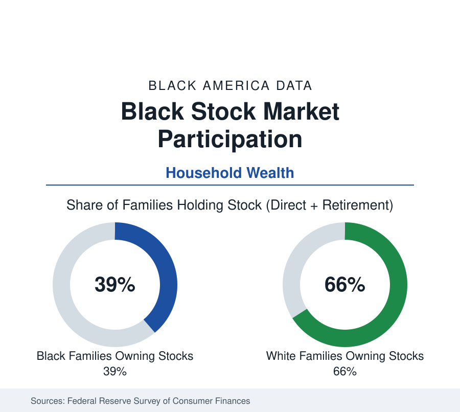

Black Business
Black Investors and the Stock Market: Participation in the Wealth Data
About four in ten Black families own stocks, directly or through retirement accounts, against about two-thirds of White families. The Federal Reserve wealth data.

About four in ten Black families own stock — directly, through mutual funds, or inside retirement accounts — against about two-thirds of White families, in the Federal Reserve's Survey of Consumer Finances. The stock market is where modern American wealth compounds, so this participation gap, together with the retirement-account data beneath it, is the single most consequential line in the wealth tables: it determines whose balance sheet shares in the equity returns that drive the net-worth medians apart. This article reports the participation data.
Participation and Portfolio Size
The SCF measures two gaps, and the second is the larger. The first is participation: roughly 39 percent of Black families hold equities in any form against roughly 66 percent of White families — a gap that has narrowed across recent surveys from wider levels as 401(k) coverage expanded. The second is scale: among families who do hold equities, the median Black portfolio is a fraction — in the range of a fifth to a quarter — of the median White portfolio, reflecting contribution capacity (the income data), employer plan access and match generosity, and years in the market. The compounding arithmetic does the rest: at long-run equity returns, the difference between the two medians' growth over a working life accounts for a substantial share of the retirement-wealth gap the SCF reports (median Black retirement-account balances run at roughly a third or less of White medians in the survey).
Access: The Workplace Gate
Most American equity ownership arrives through the workplace, and the access data therefore drive the participation data. The Bureau of Labor Statistics' benefits survey finds retirement-plan access and participation stratified by occupation and industry in exactly the pattern of the employment section: professional and public-sector workers (where Black employment is strong — the public-sector profile is part of why Black participation is as high as it is) at the top, service and gig-primary workers (where the gig profile sits) largely outside the system. Auto-enrollment and auto-escalation plan designs measurably compress the participation gap where they operate — the behavioral literature's clearest equity finding — while the self-directed layer (IRAs, brokerage accounts) shows the widest gaps, being gated by surplus income and investing knowledge rather than by an employer's default.
The Investor Surveys: Behavior and Preferences
The longest-running dedicated series, the Ariel-Schwab Black Investor Survey (fielded since the late 1990s), tracks Black households with incomes above a middle-class threshold and finds a persistent pattern: Black respondents invest at somewhat lower rates than comparable White respondents, begin later, allocate more conservatively (higher real-estate and insurance-product shares, lower equity shares), and report saving for children's education at distinctive priority — with the gaps narrowing in the youngest cohorts, whose participation in app-based investing rose sharply in the pandemic-era surveys. FINRA's capability studies add the knowledge variables: measured financial literacy scores correlate with participation in every group, and the Black score gap tracks the education data. The surveys' consistent finding is that the participation gap is not an interest gap — stated investing intent among non-investors runs high — but an access, surplus, and starting-age gap.
The Young-Investor Shift
The trend series point the same direction. Each successive SCF has found the participation gap's youngest cohort the narrowest; brokerage-account opening data from the pandemic period showed Black investors as the fastest-growing new-account demographic in several industry analyses; and the cultural infrastructure of Black investing — investment clubs, social-media educators, Black-founded fintech and advisory firms — has grown from a niche into a documented sector. The wealth arithmetic tempers the enthusiasm with scale: new small accounts compound for decades before they move medians, and the inherited-wealth data (the SCF's transfer tables show Black families receiving inheritances at roughly half the White rate, at roughly a third the median size) keep restocking the gap from the other direction.
Reading the Participation Data
The stock market in the wealth tables is a machine for converting income advantage into wealth advantage at compound rates — which is why a 39-versus-66 participation line, and a four-to-one portfolio-size line beneath it, may be the most quietly decisive figures in the census section's wealth file. The gap is closing at the extensive margin (who participates) faster than at the intensive one (how much), and the medians will follow that order.
More in Black Business
Black-Owned Businesses: Counts, Receipts, and the Representation Gap
About 161,000 Black-owned employer firms and three million solo ventures: how the Census Bureau counts Black business ownership, where firms concentrate, and the gap between population share and business share.
Black Median Net Worth: The Wealth Gap in Federal Reserve Data
The Federal Reserve puts Black median family net worth at $44,900, against $285,000 for White families — about 16 cents on the dollar. The widest gap in economic data.
Black Buying Power: The $1.8 Trillion Consumer Economy
Black buying power is estimated at about $1.8 trillion — larger than the economy of most nations. What the figure measures, who produces it, and what it buys.
Source: Federal Reserve Board, Survey of Consumer Finances; Ariel Investments and Schwab Black Investor Survey; FINRA Foundation capability studies.